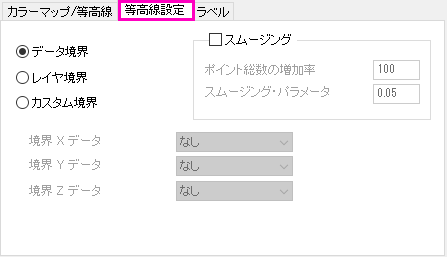
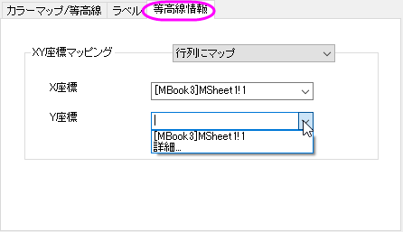

Origin 2018 SR0以前は、カスタム境界を適用すると境界マージンに不完全な色塗りが生成されることがありました。これはバージョン2018で改善されました。システム変数 @TCSMを使って、以前の不具合現象を修正することが可能です。
Originの等高線図は、行列変換とグリッディングのアルゴリズムを使用して作成するか、ワークシートのXYZデータから直接作成します。等高線のアルゴリズムについては、等高線プロットのアルゴリズムページ をご参照ください。Note: Origin 2016以前では、ワークシートのxyzデータは、表面プロットが形成される前に一度正規化されていました。Origin2016からは、生のxyz値がそのまま利用されます。XYZ等高線/曲面図用にデータを正規化を参照してください。
ワークシートのデータが直接作図された場合（グリッディングなし）は、等高線プロットの詳細 ダイアログは、追加のタブ、等高線設定 タブ（これらの設定は、theta-r 等高線プロットにも適用されます) を表示します。
| ： | : |
| 等高線設定タブの作成 | 三点等高線での等高線設定タブ |
行列データが等高線図でプロットされる場合、XY座標マッピングは等高線情報タブで指定できます。
| : |
| 行列データセットでの等高線情報タブ |
境界コントロールを使用すると、XYZ等高線図の境界をマスクできます。 次の3つの選択肢があります。
| データ境界 |
元データによる境界です。スムージングパラメータの影響を受ける場合があります。 |
|---|---|
| レイヤ境界 |
Originの外挿によって決定されるレイヤ枠です。 Note:
|
| カスタム境界 |
境界Xデータ と 境界Yデータ（境界Zデータ）をセットして、新しい境界を作成します。 |
Origin 2018 SR0以前は、カスタム境界を適用すると境界マージンに不完全な色塗りが生成されることがありました。これはバージョン2018で改善されました。システム変数 @TCSMを使って、以前の不具合現象を修正することが可能です。 |
Thin Plate Spline（TPS）アルゴリズムを使用して、XYZ補間を実行し、等高線図を滑らかにします。
次の設定があります。
| ポイント総数の増加率 |
元のポイント数に、この係数を掛け、プロットされるポイントの数を増やします。 この数字は1以上である必要があります。 |
|---|---|
| スムージング・パラメータ |
Thin Plate Spline スムージングパラメーターです。 スムージングの度合いを決定します。 数値が小さいほど、スムージングが少なくなります。 |
Origin 2017以前のバージョンでは、カスタム境界ラジオボックスを選択すると、デフォルトでスムージングチェックボックスがチェックされ、グレーアウトしていました。このスムージングをオフにすることはできません。 しかし、カスタム境界適用後、色スケールや色レベルが変更されることがありました。これを防ぐためには、システム変数@TCSを使ってトリコンタースムージングのデータポイント最大数をできる限り小さくする、例えば@tcs=0に設定するとスムージングを視覚的に「オフ」にします。 |
極座標の等高線の場合、このタブが使えます。
X座標とY座標ドロップダウンリストで、詳細...オプションを選択すると、データセットブラウザダイアログが開き、ワークシートの列をXY座標として指定できます。
X座標およびY座標ドロップダウンリストでは、同じ行列シートの行列オブジェクトが一覧表示されます。詳細...オプションを選択するとデータセットブラウザダイアログが開き、他の行列をXY座標として指定します。
_Contouring_Info_Tab/Tri_contour_smooth_mode.png)